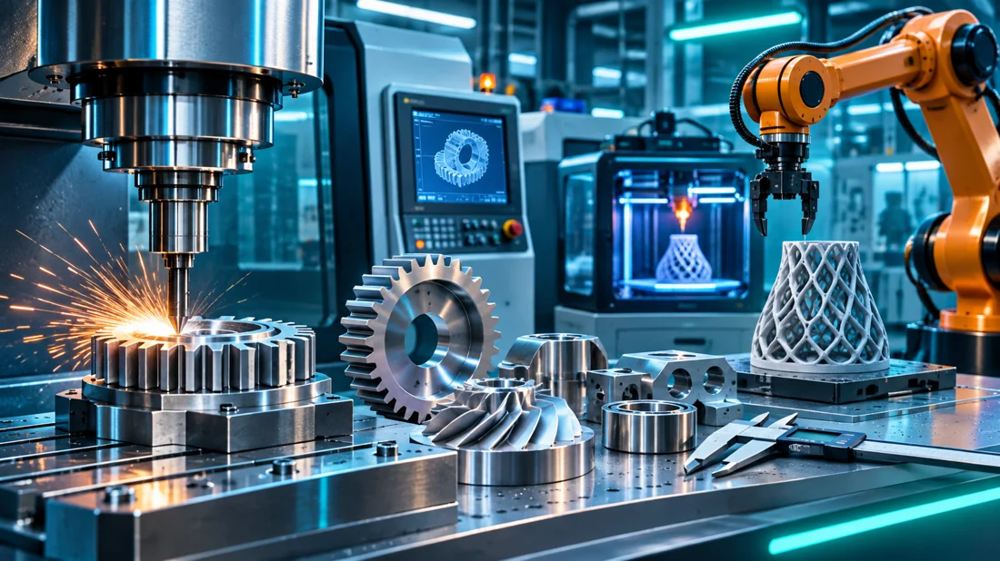

КМАН · Технології виробництва
Головна
Моє дослідження
Секції КМАН
РОЗДІЛ 03
3D-моделювання та адитивні технології

Оберіть заняття. Кожне можна проходити самостійно.
ДОСЛІДНИЦЬКЕ ЗАНЯТТЯ
Адитивні технології: сутність, принципи, види
Дослідити →